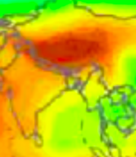
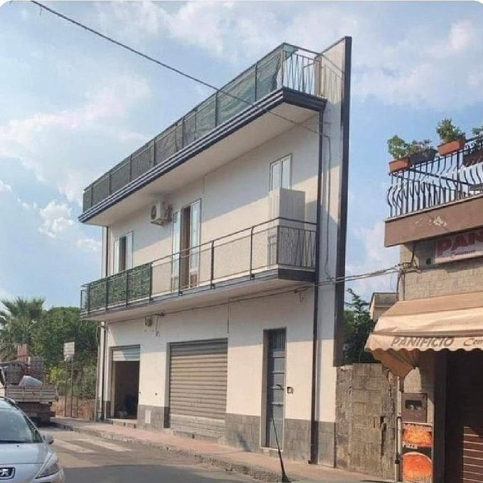
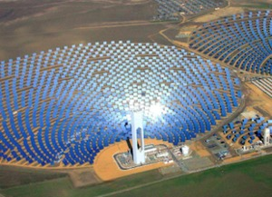

Week 45
Al Jazeera: "US, Israel, UAE, Bahrain launch joint naval drills in Red Sea.. The training focuses on maritime “visit, board, search and seizure tactics” and will “enhance interoperability” between the four participating navies, the US Navy’s 5th Fleet said in a statement on Thursday"
Some object to the inclusion of Philippines, India .. Both of these countries have enough institutional support for a democracy. Their leaders are criticized but Philippines President does not plan to remain in the job for life, in fact he regularly complains about the job and talked about quitting more than once.
"President Joe Biden is getting ready to deliver on a key campaign promise by convening a Summit for Democracy.. Representation from the Middle East was slim with Israel and Iraq among the few countries invited and notable U.S. allies such as Egypt and NATO partner Turkey absent from the list"
No "sodium cooled fast reactors" are no cure - bro. They have a leakage problem, which by an expert was deemed "almost impossible to prevent".
They make this stuff for children?
Good saying BTW
{kind=link}
That cld be useful
"[I]n the UK, calcium is added to white and brown flour by law"
I remember an interview with a hunter-gatherer, one of the last remaining ones, truly living the life, they asked him 'what makes you happy'. He said 'eating meat', mfker lit up when he said that, like it was the most beautiful thing in the world for him.
Freaking B12.. its tough to replicate regular diet through vegan. Non-vegans get many ingredients in one shot, all aminos and B12 from one burger. Even iron! Hard to replicate that.
Kava Kava - Beats For Cheats #music
China: Tibet, Qinghai, Sichuan, Shaanxi. All have a lot of potential.

Here the US regions ripe for installations: CA, NV, UT, AZ, NM, even CO.

Reuters Events: "US may require 39 GW of CSP to decarbonise"
"Spain alone accounts for over 42% of CSP installations in the world"
Spain too of course..
"Spain is one of the European countries with the most hours of sunshine"
When I see "sweltering", I read more direct sun rays baby! Bring'em on!
NYT: "[A Sicilian town Floridia] is perhaps the most blisteringly hot town in the recorded history of Europe, offering Italy and the entire Mediterranean a preview of a sweltering.. future"
The EU countries could buy solar produced clean gas from Africa, but also from a country of their own, Italy. Remember that news abt that Sicilian town, when it got really hot during the summer. Hell put an SBD, or CSP installation there, ship H2.
An electric grid cannot store power like an H2 grid can. Electrons are too fickle, the moment voltage at the endpoints go away (generation stops), there is no current. But if new gas stopped flowing into a gas network, there would still be gas remaining in the pipes. Gas molecules have substance, they have a physical existence without the presence of potential difference on either end. For the gas, if generation stopped, one can still push the remaining gas out through midpoint stations.
"@ACatInParis
Berlin to exclude unvaccinated from restaurants, bars and gyms"
OWM API is free BTW (under a certain usage frequency), it has historical pollution data, starting from late 2020. It uses a so-called SILAM model to track pollution, updates hourly afaik. If emission monitoring is needed, OWM could be a cheap way of getting those tracking data points.
Beijing China air quality, not good.. Checked it through Open Weather Map API. See doc for the range of those numbers. AQI 1 is good, 5 bad. Nov 11, 14:00 EST.
import requests, urllib.parse, json
def pollution(lat,lon):
url = 'http://api.openweathermap.org/data/2.5/air_pollution?'
weatherapi = open(".key/.owm").read() # your api key goes in that file
payload = { 'lat': str(lat), 'lon': str(lon), 'appid': weatherapi }
r = requests.get(url, params=payload)
res = [json.loads(x.decode()) for x in r.iter_lines()]
print (res[0]['list'][0]['main'])
comp = res[0]['list'][0]['components']
for xx in comp: print (xx, comp[xx])
pollution(39.9042, 116.4074)
{'aqi': 5}
co 1201.63
no 44.7
no2 65.8
o3 0
so2 67.71
pm2_5 78.32
pm10 100.23
nh3 17.99
"@sarahrainsford
Talk of Lukashenko 'weaponising' migrants in retaliation for EU sanctions vs Belarus isn't idle
Lukashenko:
26.05 'We used to stop the drugs & migrants. Now you'll have to catch them yourselves'
22.06 'You launched a hybrid war vs us & demand we protect you like before?'
etc"
"@techreview
Today’s AI is nowhere close to being intelligent, never mind conscious. Even the most impressive deep neural networks are totally mindless"
"@Innovyze
The new bill requires & incentivizes water utilities to better assess and replace lead pipes"
Dried garlic flakes imported all the way from China.. In a country with considerable agro capacity. Globalization is weird.
I heard AMLO relies more on the army than the police for the fight against cartels. Then they turn around give cartels a free rein?
The Guardian: "Mexico army gives drug cartels free rein as critics claim ‘non-aggression pact’"
"@Rainmaker1973
You may not know that the derivatives of the position vector (x) with respect to time have interesting names:
Velocity (v) = dx/dt
Acceleration (a) = d²x/dt²
Jerk (j) = d³x/dt³
Snap (s) = d⁴x/dt⁴
Crackle (c) = d⁵x/dt⁵
Pop (p) = d⁶x/dt⁶"
Reuters: "China daily coal output hits multi-year peak, prices expected to fall"
Boy coal prices are down
In a way SBD and CSP are also about deelectrification.
"The solar beam-down may generate power more cheaply than silicon panels"
"The world’s biggest port for coal exports could be home to one of Australia’s next hydrogen hubs as the nation transitions to cleaner energy.
The federal government has earmarked the Port of Newcastle for $3 million feasibility study to determine where a new 40 MW hydrogen hub could be located at the port, on the New South Wales coast"
"@OdedRechavi
Data will be made available upon reasonable request"

Escalates? Hey there is always room for growth
The Independent: "Israel escalates surveillance of Palestinians with facial recognition program in West Bank"
Mine for lithium for BEVs, destroy the area then throw bunch of useless clothing in its place, polluting some more.. F-ing great
"Chile’s Atacama desert becomes dumping ground for fast fashion leftovers"
Is working with discontinuities the next level shit in compsci? In optimization, subgradient methods rule. For waves so-called Riemann approaches are extremely useful. Computation discretizes anyway, so planning for splitting prob into chunks from get-go can be a good idea.
When the dad in an action movie is Stephen Lang, or J. K. Simmons, you know that's an action dad. You know near the end of the movie he is getting a shotgun and there will be a shoot-out. There's just no other reason for that casting otherwise.
I nudge the recommender now, giving it only one movie like to get more movies of that type. WR came from Vertical Limit; makes sense, shot in a wide landscape, lots of nature, snow..
Wind River, good
"Alberta, Canada, has released its hydrogen roadmap"
"European Institutions must support #electrolyser projects with at least 50MW capacity provided by a single electrolyser, says @H2Europe and the @renewableH2EU"
Whodunit? Sadr is the big Shite honcho. He condemned the attacks, who is left?
I read al-Kadhimi played a role in the killing of Soleimani.
"Iraqi Prime Minister Mustafa al-Kadhimi escaped unharmed in an assassination attempt by armed drone... It came two days after violent clashes in Baghdad between government forces and supporters of Iran-backed political parties, most of which have armed wings, since those groups lost dozens of seats in parliament after a general election on Oct. 10...
Shi’ite Muslim cleric Moqtada al-Sadr, whose party was the biggest winner in last month’s election, calling the attack a terrorist act"
AP: "Idaho public health leaders expanded health care rationing statewide on Thursday amid a spike in the number of unvaccinated COVID-19 patients requiring hospitalization"
CNBC: "Travel stocks rally, stay-at-home companies plunge as pandemic wanes and tourism rebounds.. Pfizer said on Friday its Covid-19 pill could cut hospitalization risk or death by 89%, and the U.S. prepares to lift international travel bans Nov. 8"
Breaking Defense: "Army reactivates theater artillery command amid Russian build-up near Ukraine... The European Theater Fires Command was deactivated in 1991 after the signing of the INF. Now the Army views is as critical to long-range fires in multi-domain operations"
The pedestrian walking on that sidewalk is also part of the same public, and his rights are being trampled on -- he cannot walk on a sidewalk when someone plants an entire campground in his way.
"But it is public space! We cannot disallow the public from living there"
LA Times: "The city of Los Angeles has undertaken a major shift in its approach to homelessness, one that puts a priority on clearing unsightly street encampments"
Now the big question: Carbon or methane? Which one causes more warming? Looked at that too, here.
Graph was flat for a while but then it shot up again starting 2005. That must be the so-called "US Shale Revolution". Natural gas production skyrocketed in US, and so the leaks, flaring, etc.
What are those little bumps? That is probably methane of decades earlier disappearing (methane can expire much earlier than carbon). But we keep putting more in, so the trend is up.
Methane levels in the atmo
Nathan Lewis: "Everything needs to be decarbonized. My passion, our research, is to do that by the silver bullet, which is to take the biggest resource known to mankind, the Sun, and store it in the most dense form known to man other than the nucleus of an atom, chemical bonds.. Our job is... to do photosynthesis with the Sun to make chemical fuels that can be used to power our grids, store our energy, work as our transportation fuels"
That is fantastic. Prof Nathan Lewis, eh?
"[Trump] poured billions of taxpayer dollars into a small pharma company and agreed not to share its Covid vaccine with the world. Now Moderna is holding up the race to vaccinate low-income countries"
— Gabriel Zucman (@gabriel_zucman) October 28, 2021
"[Enertrag] welcomed a Uruguayan delegation to its Uckermark, Germany, renewable power plant as the company showcased the potential of green hydrogen production and its exportation"
Why did Rudolph Diesel not continue with ammonia engines? Production of NH3 in huge amounts was probably a factor. Refining crude oil, especially of a certain kind, isn't too hard. But that was a long time ago, we had a long time to work on ammonia production tech, plus there is new urgency around the issue.
I read about that; it is apparently an ammonia based combustion engine. 100% clean, zero emissions.
"Fortescue is undertaking to deliver several key projects... These projects include: Developing a ship design powered by green ammonia and trialing that design in new ammonia engine technology, at scale.. Trialing technology on locomotives to run on green ammonia"
World Crude Oil Production, now through EIA API. Good source.
Global conflict stats for September.
Afghanistan deaths way down (surprise), from over 4000. Incident count too high for Mexico, though deaths not much.. drug related attacks, sabotage, explosion maybe, but not direct homicide? Yemen, Nigeria were at the top.
Stanwell is building a plant in AU, using 17,000 m² of mirrors. Spain, AU, the Middle East, Chile are great places for this tech.
"An estimated 550 MW of concentrating solar thermal power (CSP) came online in 2018, increasing cumulative global capacity more than 11% to just under 5.5 GW"
At night no sunshine? No problem, there will still be gas in the pipeline network, more than enough for night time usage.
CSP plant in Chile

Reflecting, or redirecting sunlight through lenses can give immense power. Haven't we all used a convex lense to focus sunlight on something as a kid, and saw it burn? Get sunlight, create heat, generate fuel. Simple.
High-voltage electric grid uses SF6 too.. another reason to deelectrify, and use clean molecules for all long distance energy transmission, keeping electrification at a minimum.
Wind turbines use that f-ing SF6, truly disgusting stuff
Excerpt from The Rare Metals War.
H2 pipelines, ammonia, CSP (Concentrated Solar Power) plants do not require rare earth materials. All you need for CSP is glass and steel to make mirrors which is known tech and resources for it are abundant. Efficiency at 30% equals solar panel tech.
"The current global supply of several critical metals is insufficient to transition to a renewable energy system. [..P]roduction of wind turbines and photovoltaic (PV) solar panels already requires a significant share of the annual global production of some critical metals. Looking at the global scale, scenarios in line with the goals of the Paris Agreement require the global production of some metals to grow at least twelvefold towards 2050, compared to today’s output. Specifically, the demand for neodymium, terbium, indium, dysprosium, and praseodymium stands out. This calculation does not include the demand for these specific metals in other applications, such as electric vehicles or consumer electronics"
"[W]hereas greenhouse gases force the climate system in the warming direction, aerosols force the system in the cooling direction because the airborne particles scatter and absorb incoming sunlight.
[Climate researcher Hansen believes to] power [the] large-scale [post WWII] expansion of industry, Europeans and Americans burned an enormous quantity of fossil fuels.. In addition to carbon dioxide, burning fossil fuel produces particulate matter—including soot and light-colored sulfate aerosols. Hansen suspects the relatively sudden, massive output of aerosols from industries and power plants contributed to the global cooling trend from 1940-1970.
'That’s my suggestion, though it’s still not proven,' [Hansen] said. 'There is a nice record of sulfates .. that shows this type of particle was peaking in the atmosphere around 1970. And then the ice core record shows a rapid decline in sulfates, right about the time nations began regulating their emission.' (Sulfates cause acid rain and other health and environmental problems.)"
Yes between 40-70s there was a brief cooling in climate; but this happened partly due to an action hard to replicate. We need to fix the root of the problem, through clean fuels.
Got to play with 🐍 package netcdf4, can be useful later. Lots of
geo data is shared as cdf.
Working with raw data is never easy. Berkeley data could be spotty for earlier years, thx to one suggest from a researcher fixed it through interpolation.
I like the title
"Bad apples come from rotten trees in policing"